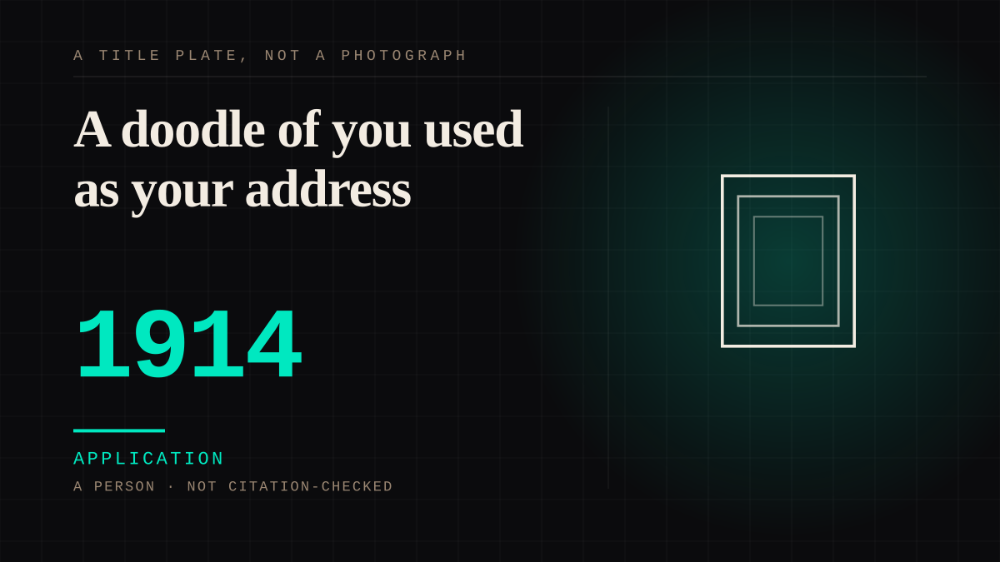

A person · 1914 · Silent era
A doodle of you used as your address
By 1917 nine out of ten men at a costume ball came as him, a hold-up man in Cincinnati borrowed his costume as a disguise, and in 1916 somebody was paging him in more than eight hundred hotels at the same moment. Later, fans sent letters with a doodle of his face where the address should have been. The likeness had stopped being a picture and started being an instruction.

The silhouette was usable. That is the entry. The Tramp first appears in Kid Auto Races at Venice, filmed on 11 January 1914 and released on 7 February; by 1917 the costume was common enough to be a costume of record - "most of the girls came as Annette Kellerman, the swimming star, and nine out of ten men came as Charlie Chaplin." In February 1917 the same costume was used as a disguise by a hold-up man in Cincinnati. A likeness that exists only on a screen cannot be worn by a robber. This one could, and that is the difference between being famous and being an instruction.
The same period that produced the robbers produced the diagnosis. About 12 November 1916 the Boston Society for Psychical Research was investigating "certain phenomena connected with the simultaneous paging of Mr Charles Chaplin, motion picture comedian, in more than 800 large hotels of the United States" - one man being asked for in eight hundred hotels at once, from the Atlantic to the Pacific and the Canadian boundary to the Gulf - and the Kansas City Star asked the next day whether readers had had "the Chaplin-itis?" Robinson's account of the period has theatres "promoting the Chaplin vogue by sponsoring amateur Charlie look-alike contests"; Chaplin himself said he was "tempted to give lessons in the Chaplin walk."
The contest story is told two ways and both are here. The Chaplin archive's own press clippings from 1918 record Mary Pickford telling a dinner in London that he had entered a Chaplin walk contest at a fair in the United States and came in twentieth; the version everybody repeats has him coming in third, which Snopes rates Unproven and traces to a magazine post from December 2022. The famous version is the one that needed no source, and the documented one is second-hand from a friend. Neither number changes what the contests were for: an audience competing to be the nearest copy of a man who was not there to judge it.
The mail is where the likeness becomes infrastructure. In a 1932 feature on "Hollywood's Funny Fan Mail", Clara Bow was receiving about 35,000 letters a month; Maurice Chevalier's arrived with no address whatever, just his picture on the envelope; Clark Gable's were addressed to "Valentino the Second". An address that works without a street is a likeness doing a job, and by the 1950s a doodle of Chaplin's face was being used as the address on letters sent to him at the Savoy Hotel. This entry does not claim what became of that post; the point is only that it was thought to be enough to send.
Application. One-sided attachment put to work on purpose. Creator economies, community, fandom as infrastructure, and the things that genuinely help people. Not automatically good - a tool with an obvious use is a tool that will also get a bad one.
Manipulation. One-sided attachment engineered for somebody else's benefit. Paid intimacy, parasocial persuasion, sasaeng, grief extraction, the streak. The lane that pays the bills and the lane that causes the most harm, frequently at the same time.
Where it sits
1900 1900-1949 · 1914 1949
Provenance · 5 source record(s)
- unverifiedThe strongest record in the entry, and it carries the quotations. Robinson (2001, pp. 223-224, first published 1985) quoted in full: that "Costume balls were in great vogue in 1917 ... most of the girls came as Annette Kellerman, the swimming star, and nine out of ten men came as Charlie Chaplin"; that "In February 1917 Charlie Chaplin costume was used as a disguise by a hold-up man in Cincinnati"; that "About the same time the Boston Society for Psychical Research was investigating 'certain phenomena connected with the simultaneous paging of Mr Charles Chaplin, motion picture comedian, in more than 800 large hotels of the United States'", observed on 12 November 1916; and the Article's reading that Chaplin was "tempted to give lessons in the Chaplin walk". Also the 1918 press clippings in which Mary Pickford told Lord Desborough, who repeated it to the press, that Chaplin had entered a Chaplin walk contest at a fair in the US and came in 20th. Read through a search index rather than fetched, so the record is unverified: a reader can open this page, this agent did not.CharlieChaplin.com, "Did Charlie Chaplin Once Lose His Own Lookalike Contest?" ↗
- unverifiedThe entry's year, and the moment the likeness began. That the Tramp was first filmed on Sunday 11 January 1914 and released on 7 February 1914; and that Mabel's Strange Predicament, in which the character also appears, was released on 9 February 1914. Read through a search index rather than fetched, so the record is unverified: a reader can open this page, this agent did not.CharlieChaplin.com, "Kid Auto Races at Venice" ↗
- unverifiedThe version the entry does not stand behind, and the reason it is recorded rather than repeated. That the check rates the story Unproven; that its tracing puts the modern form of the anecdote in a Far Out Magazine post of December 2022; and that the supporting history it assembles includes Joyce Milton's Tramp, which has theatres "promoting the Chaplin vogue by sponsoring amateur Charlie look-alike contests." Read through a search index rather than fetched, so the record is unverified: a reader can open this page, this agent did not.Snopes, check of the Charlie Chaplin look-alike contest anecdote (rated Unproven) ↗
- unverifiedThe comparison that shows the phenomenon was not his alone, and the two details the entry's last paragraph turns on. That Clara Bow received about 35,000 letters a month; that Maurice Chevalier's mail carried no address whatever, just his picture on the envelope; and that Clark Gable's was addressed to "Valentino the Second". Read through a search index rather than fetched, so the record is unverified: a reader can open this page, this agent did not.The Evening Star, "Hollywood's Funny Fan Mail", 25 December 1932, page 44 ↗
- unverifiedThis is the weakest record in the entry - a syndicated human-interest piece rather than a documentary source - so it is flagged rather than leaned on, and nothing in the entry rests on it. That "Imagine being so famous that a doodle of you could be used as your address."; that the letters were sent in the 1950s to him at the Savoy Hotel; and what the entry does not take from it, which is any claim about what happened to the post. Read through a search index rather than fetched, so the record is unverified: a reader can open this page, this agent did not.Scoop (Upworthy), on the letters fans sent Chaplin in the 1950s ↗
Connected · 2 out, 2 in
It sits in